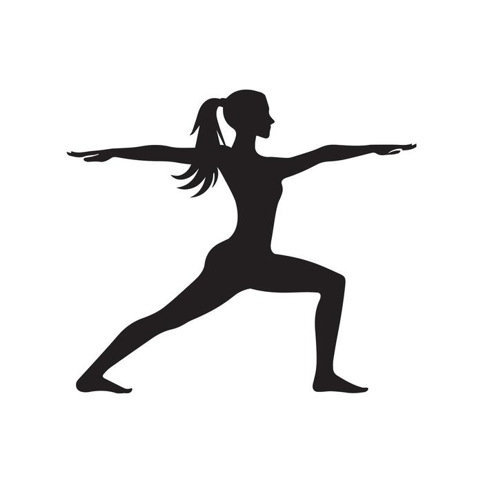
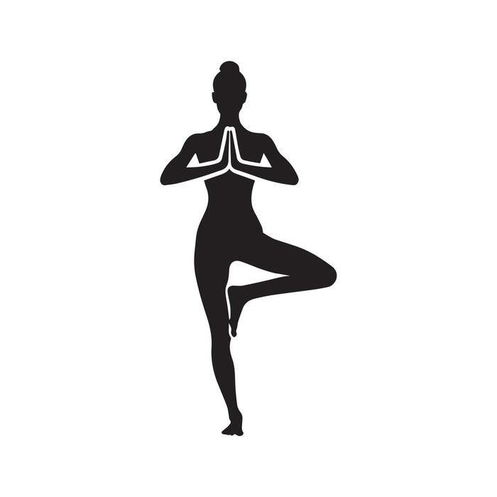
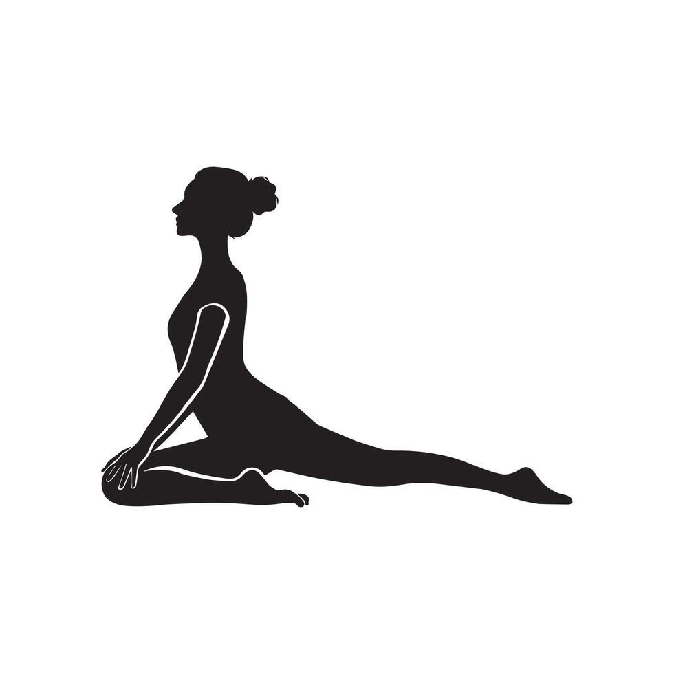
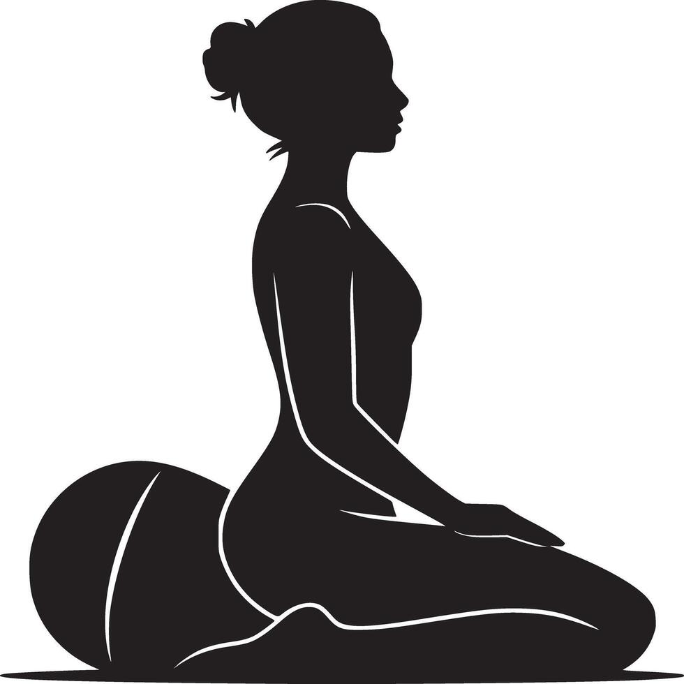
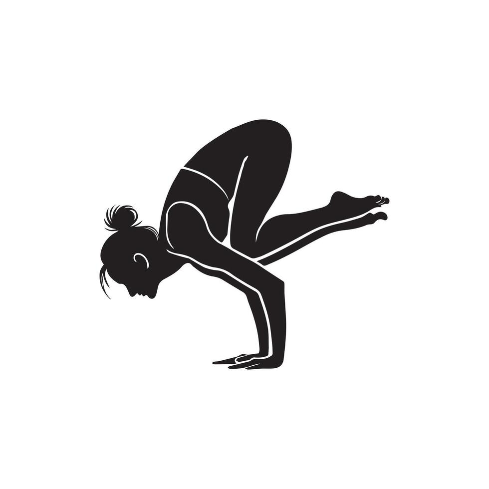
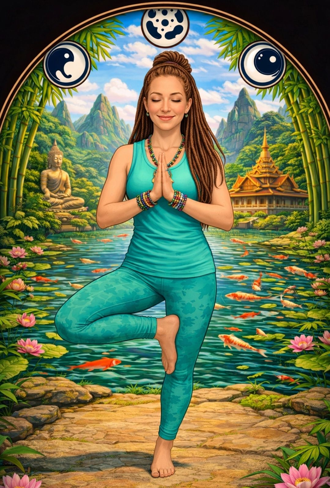
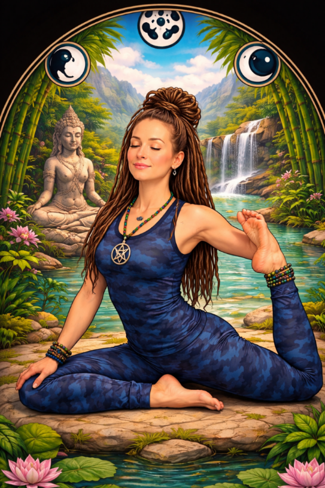

1 / 8
Yoga does not have to mean advanced stretches, expensive gear, or an hour-long class. For beginners, it can be as simple as taking a few quiet minutes to breathe, move with intention, and reconnect with the body.
For Zenn4Life, yoga is not about being perfect in a pose. It is about creating a practice that helps people feel steadier, stronger, more flexible, and more centered throughout the day. Research suggests yoga can support stress management, balance, sleep, general wellness, and emotional well-being when practiced regularly and safely.
Beginning yoga can feel intimidating when you see deep backbends, hand balances, and complicated poses online. But yoga is meant to meet you where you are.
A beginner practice can start with five minutes on a mat, a towel, or even a clear spot on the floor. The goal is not to force your body into a position — it is to pay attention. Breathe slowly, move carefully, and notice how you feel. Yoga can become a small reset button: a chance to step away from stress, screens, and the rush of the day.
Yoga is not a replacement for medical care, but it can be a useful part of a healthy routine.
You do not need to be flexible to begin yoga. Yoga is how you gradually build flexibility, balance, and body awareness.
Warrior II is a powerful standing pose that helps a beginner feel grounded and confident. It encourages focus while gently challenging the legs, hips, shoulders, and core.
Step your feet wide apart. Turn one foot outward and bend that knee comfortably while keeping the other leg straighter. Extend both arms out at shoulder height and look over the front hand. Keep the shoulders relaxed and breathe steadily. Warrior II is a great reminder that yoga is not only about relaxing — it also teaches strength, stability, and presence.

Do not force the front knee deeply — a smaller bend is completely fine. Shorten the stance if a wide stance feels uncomfortable.
Be strong without being hard on yourself.
Tree Pose is a beginner-friendly balance pose that teaches patience. Some days balance feels easy; other days it does not. That is normal.
Stand tall with both feet on the floor. Shift your weight into one foot, then place the other foot lightly against the ankle, calf, or inner thigh — never directly on the knee joint. Bring your hands together at your chest in prayer position. If it feels comfortable, raise the arms overhead. Tree Pose builds balance and concentration — and it teaches a useful lesson: when you lose balance, simply reset and try again.

Place one hand on a wall, chair, or countertop for support. Keeping the lifted toes on the floor is also a valid version of the pose.
Root down, breathe deeply, and grow at your own pace.
Modern life involves long periods of sitting, driving, working, and scrolling. Gentle hip and lower-body stretches can feel especially welcome after a busy day.


Pigeon Pose is a hip-opening stretch that can be intense — move slowly and support the hip with a folded blanket, pillow, or block. Kneeling Hero Pose offers a quieter moment: sit back on the heels, or on a cushion between the feet, for a calm posture for breathing and reflection. Neither pose should cause sharp pain, numbness, or joint pressure.
For Pigeon, lie on your back and try a gentle "figure four" stretch instead. For Hero, sit on a cushion or choose a comfortable cross-legged seat.
Rest is part of the practice — not something you have to earn.
Crow Pose is a challenging balance where the hands support the body while the knees rest high on the upper arms. It requires wrist strength, core engagement, focus, and patience.
For a beginner, Crow is not about immediately lifting both feet off the ground. The first step is practicing the setup: hands firmly down, elbows slightly bent, leaning forward carefully, learning where your balance point is. Growth comes from practice, not pressure — and working on Crow for weeks or months before lifting off is completely okay.

Place a pillow in front of you, keep one foot on the floor, and practice shifting weight gently into the hands. Stop if the wrists, shoulders, or neck feel strained.
You do not have to master the pose today. You only have to show up for yourself today.
An easy beginner flow that fits into a morning, a lunch break, or an evening wind-down:
A short, consistent practice becomes a meaningful daily habit — one that supports movement, calm, confidence, and a little more balance in everyday life. Yoga offers a low-impact way to bring movement and mindfulness together.

Listen to your body. Stop if a pose causes sharp pain, dizziness, numbness, or unusual discomfort.
Beginners, older adults, pregnant people, and anyone with a medical condition, injury, joint issue, glaucoma, high blood pressure, or balance concern should check with an appropriate health professional and use a qualified instructor for personalized guidance. Avoid forcing poses, especially intense inversions or advanced balances. When performed properly yoga is generally safe — most injuries come from pushing too far or poor alignment, so learn gradually and modify as needed.
